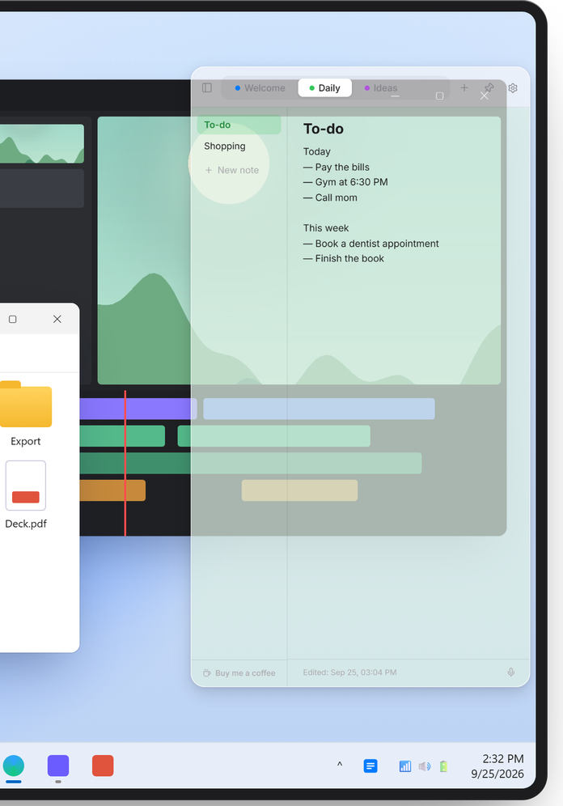
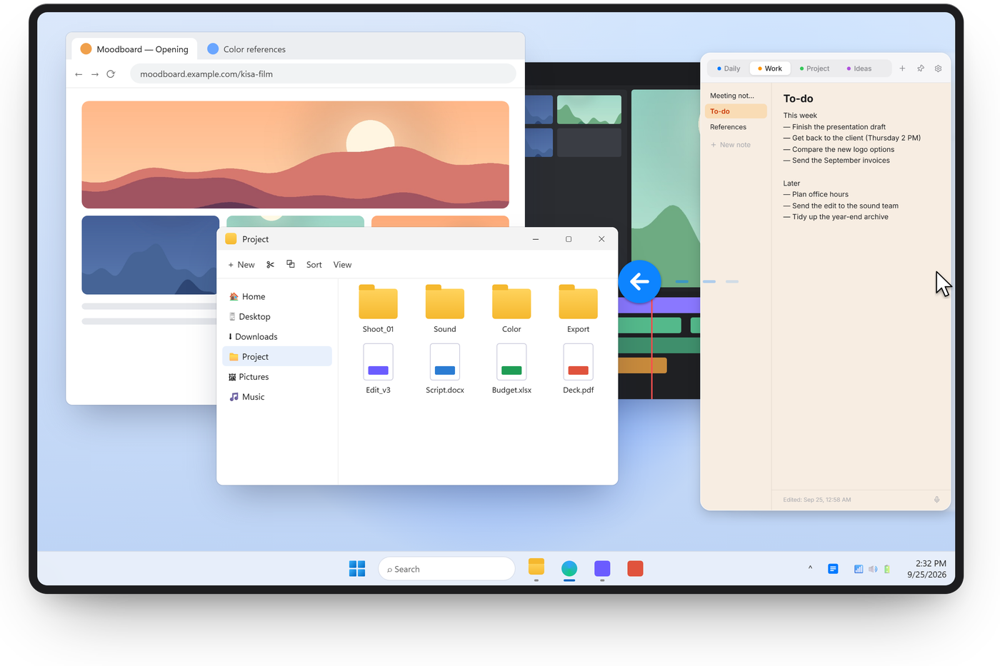
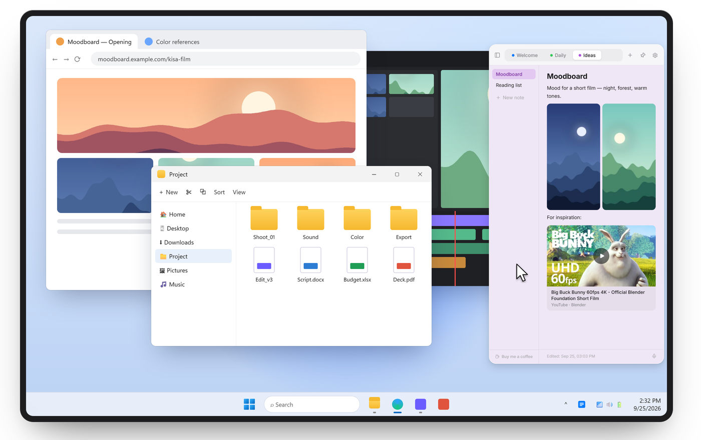
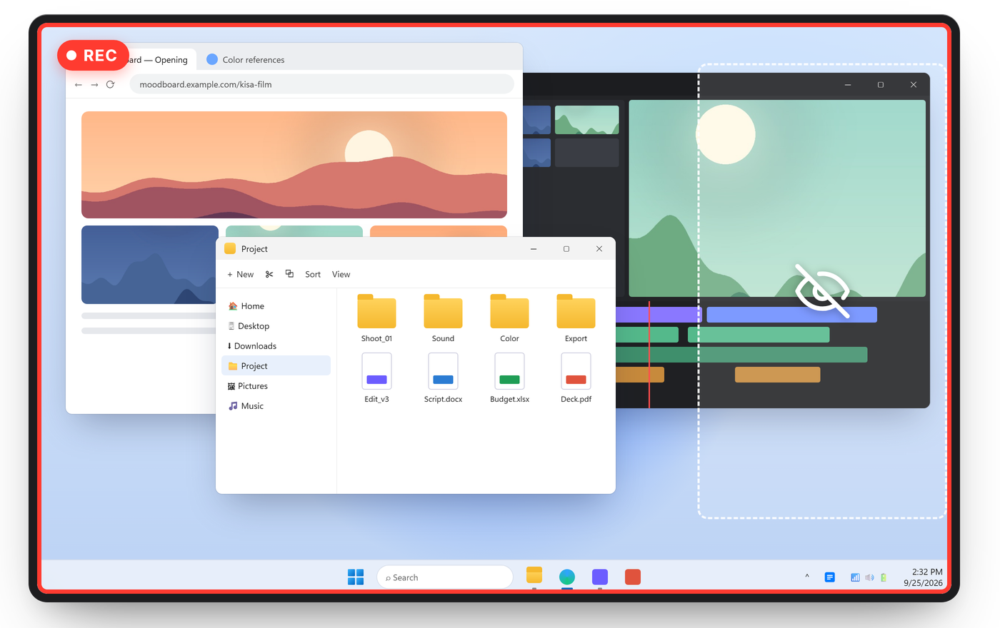
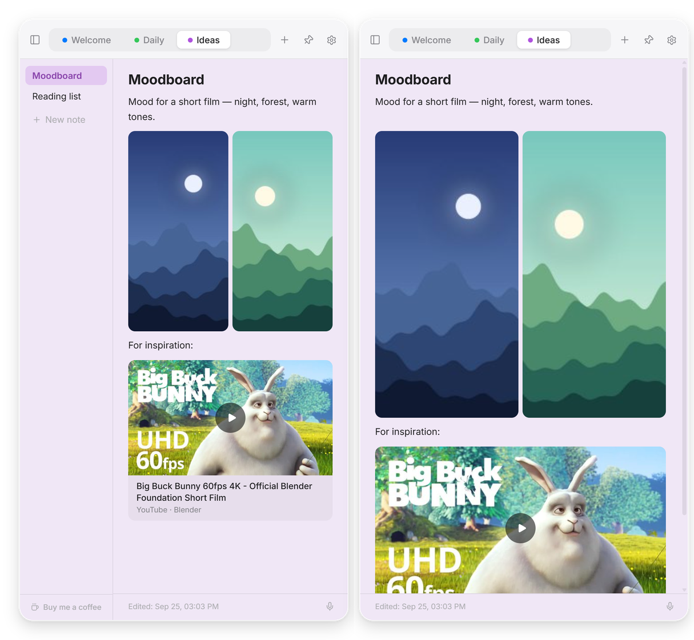
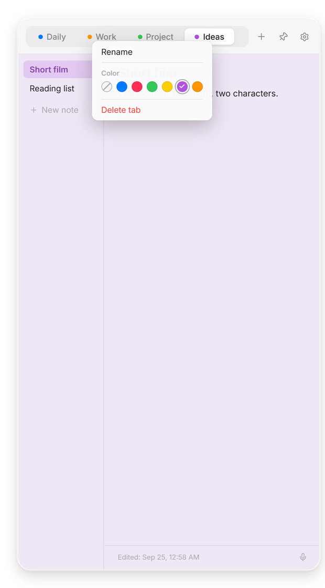
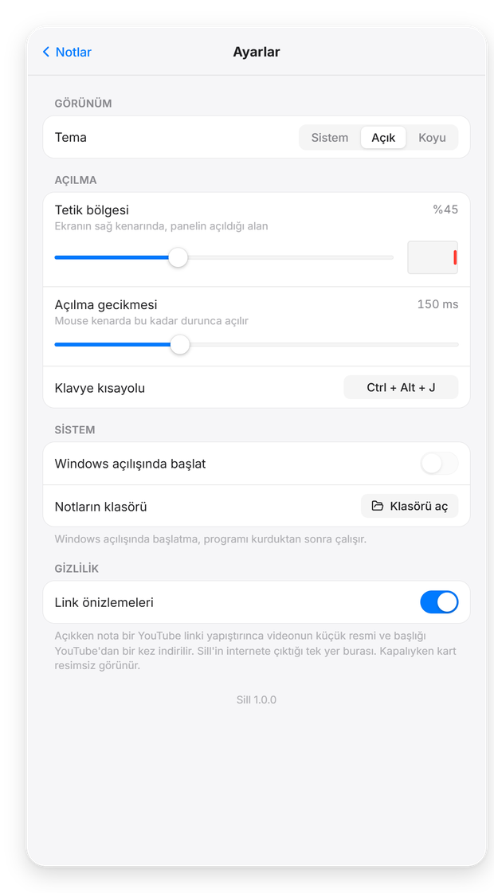

Novità · Opacità
Guarda attraverso.
Rendi trasparente lo sfondo del pannello, dal 60% al 100%. Testo, immagini e pulsanti restano nitidi: vedi solo un po’ di ciò che c’è sotto. Impostazioni → Aspetto → Opacità.

Porta il mouse sul bordo destro dello schermo e le note scivolano dentro. Allontanalo e spariscono. Gratis per Windows.
Altre opzioni: Installer (ZIP) Portatile (ZIP, senza installazione) Tutte le versioni
Sill Note · Gratis · Windows 10 e 11 · Nessun account · v1.3.0


Novità della 1.3
Attiva un solo interruttore e Sill Note sparisce dalle registrazioni dello schermo, dalla condivisione e dagli screenshot — Zoom, Teams, Discord, OBS. Tu lo vedi come sempre, così le tue note restano con te anche nel mezzo di una chiamata.


Impostazioni → Privacy → Nascondi durante la condivisione schermo. Funziona da Windows 10 (versione 2004) in poi. Non nasconde lo schermo a una fotocamera o a una scheda di acquisizione.
Novità · Opacità
Rendi trasparente lo sfondo del pannello, dal 60% al 100%. Testo, immagini e pulsanti restano nitidi: vedi solo un po’ di ciò che c’è sotto. Impostazioni → Aspetto → Opacità.

Novità · Concentrazione
Fai clic sul pulsante della barra laterale in alto a sinistra: l’elenco delle note scivola via e la nota occupa tutto il pannello. Un altro clic e torna.

Media
Trascina un’immagine, rilascia un file audio o incolla un link di YouTube. Tutto resta nella nota, accanto al testo.

Note vocali
Un clic avvia una nota vocale con forma d’onda dal vivo. Cambia microfono mentre registri. Il microfono si spegne appena ti fermi.

Organizza
Argomenti in alto, note a sinistra. Colora, rinomina e riordina. Tema chiaro e scuro inclusi.

Privacy
Nessun account, nessun cloud, nessun tracciamento. Tutto resta sul tuo computer. Leggi l’informativa sulla privacy.

Lingue
English, Türkçe, Deutsch, Français, Español, Português, Italiano, Русский, 日本語 e 简体中文. Sill Note segue automaticamente la lingua di Windows.
Il download diretto non è ancora firmato, quindi Windows avvisa la prima volta. Fai clic su Ulteriori informazioni → Esegui comunque. La prossima versione per Microsoft Store è firmata da Microsoft e non mostrerà questo avviso.
Lascia il mouse al centro del bordo destro dello schermo o premi Ctrl + Alt + N. La scorciatoia si cambia nelle Impostazioni.
Solo quando incolli un link di YouTube: Sill Note scarica una volta la miniatura e il titolo del video. Puoi disattivarlo in Impostazioni → Privacy.
Scarica per Windows va bene per quasi tutti: è l’installer, non chiede permessi di amministratore e aggiunge Sill Note al menu Start. Installer (ZIP) è lo stesso file compresso, utile se il browser o la posta bloccano i file .exe. La versione portatile non si installa: estrai lo ZIP in una cartella qualsiasi e fai doppio clic su Sill.exe. Le note vengono salvate nello stesso posto con tutte e tre.
Sì. L’intero codice sorgente è pubblico su GitHub: chiunque può leggere esattamente cosa fa l’app. Nessuna connessione nascosta, nessun tracciamento, nessun caricamento in background; va online solo per l’anteprima di YouTube, facoltativa. Inoltre la versione del Microsoft Store viene verificata da Microsoft prima della pubblicazione.